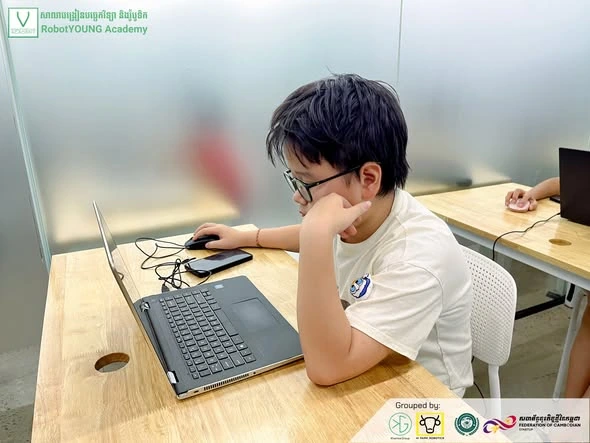
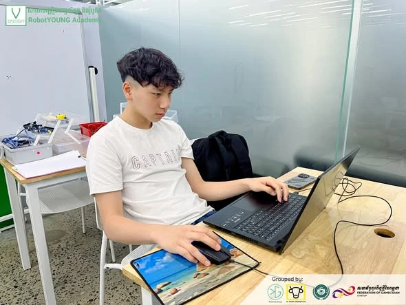
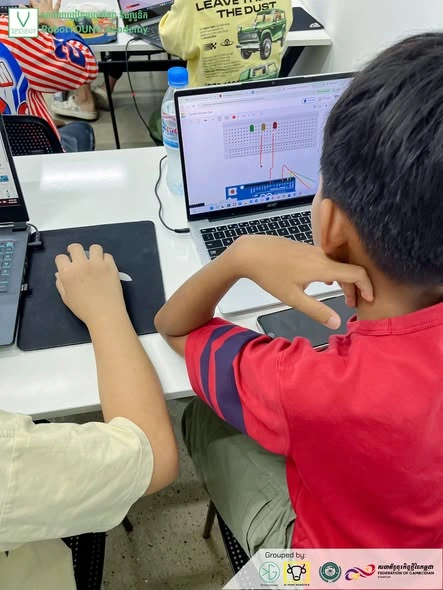
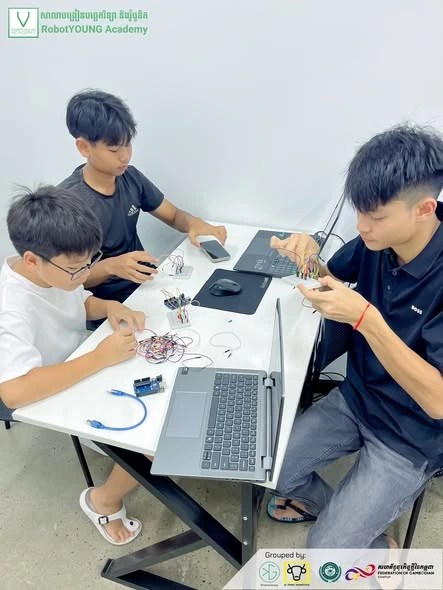

🤖 ជំនាញបច្ចេកវិទ្យាពិត មិនមែនកើតឡើងត្រឹមទ្រឹស្តី ក្នុងសៀវភៅទេ គឺផ្ដើមពីការរចនា ទៅដល់ការអនុវត្តជាក់ស្តែង - Real tech skills don't come from textbooks alone, they start from design to real-world application! 🚀
នៅក្នុងថ្នាក់ STEM Robotics Engineering Program សិស្សានុសិស្សរបស់យើងបានសាងសង់ និងសាកល្បងជាមួយរ៉ូបូតដោយផ្ទាល់ដៃ រួមបញ្ចូលគ្នានូវបច្ចេកវិទ្យា អេឡិចត្រូនិក ការគ្រប់គ្រងម៉ូទ័រ និងការសរសេរកូដ។ តាមរយៈ Hands-on Learning សិស្សបានរៀនដោះស្រាយបញ្ហា កែតម្រូវកូដ និងសៀគ្វី នៅពេលដែលរ៉ូបូតមិនទាន់ដំណើរការតាមការរំពឹងទុក ដែលនេះជាបេះដូងនៃ Engineering Mindset។
ការរៀនបែបនេះមិនត្រឹមតែផ្តល់ចំណេះដឹងផ្នែក Robotics & Coding ប៉ុណ្ណោះទេ ប៉ុន្តែថែមទាំងអភិវឌ្ឍជំនាញ Critical Thinking និង Problem-Solving សម្រាប់ការបង្កើតថ្មីនាពេលអនាគត។
EN: In our STEM Robotics Engineering Program, students build and test Robotic Cars hands-on, integrating technology, electronics, motor control, and coding. Through experiential learning, they troubleshoot, debug, and test systems when things don't go as planned, cultivating a true Engineering Mindset. This approach not only builds technical skills in robotics and coding, but also develops critical thinking, problem-solving, and creativity for future innovators.
#STEM#STEMEducation#STEMRobotics#Robotics#RoboticsEngineering#RoboticsEducation#Coding#Programming#Engineering#EngineeringMindset#HandsOnLearning#ExperientialLearning



